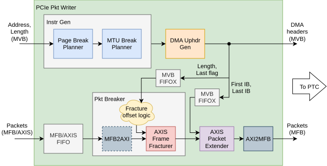

PCIe Packet Writer
- ENTITY PCIE_PKT_WRITER IS
Basic description (more information in README)
This module accepts packets and the address to which it shall be written into memory. It splits packets according to the PCIe MTU and memory page boundaries. Then it generates an Upstream DMA header for each of these packet parts. Its output interface is compatible with the PTC module.
Input packets are expected to start at the beginning of the word (Item 0).
Check out this diagram for a top-level view of the PCIe Packet Writer’s architecture.
Generics
PortsGeneric
Type
Default
Description
=====
MFB parameters
=====
=====
MFB_REGIONS
natural
1
For RX (user) interface. Number of MFB Regions in a word, cannot handle more than 1.
MFB_REGION_SIZE
natural
8
MFB_BLOCK_SIZE
natural
8
MFB_ITEM_WIDTH
natural
8
PCIE_MFB_REGIONS
natural
2
For TX (PCIe) interface.
PCIE_MFB_REGION_SIZE
natural
1
PCIE_MFB_BLOCK_SIZE
natural
8
PCIE_MFB_ITEM_WIDTH
natural
32
=====
AXI-Stream parameters
=====
=====
AXI_RX_DIRECT
boolean
true
Uses the RX_AXI input interface when true, RX_MFB when false.
AXI_TDATA_WIDTH
natural
512
AXI_TUSER_WIDTH
natural
0
not supported
=====
Other parameters
=====
=====
PKT_MTU
integer
2**12
Maximum packet size (in bytes).
PCIE_MPS_WIDTH
integer
15
ADDRESS_WIDTH
natural
64
PAGE_SIZE
natural
4096
Size of a RAM page (in bytes). Must be a power of two.
INSTR_FIFO_SIZE
natural
512
DEVICE
string
“AGILEX”
Port
Type
Mode
Description
CLK
std_logic
in
RESET
std_logic
in
PCIE_MPS
std_logic_vector(PCIE_MPS_WIDTH-1 downto 0)
in
Specifies the currently configured max PCIe write request (in bytes). PCIe specification allows at least 128.
=====
RX Interface
=====
select between MFB and AXI RX interface using AXI_RX_DIRECT
RX_MVB_ADDRESS
std_logic_vector(MFB_REGIONS*ADDRESS_WIDTH-1 downto 0)
in
RX_MVB_LENGTH
std_logic_vector(MFB_REGIONS*log2(PKT_MTU+1)-1 downto 0)
in
RX_MVB_VLD
std_logic_vector(MFB_REGIONS-1 downto 0)
in
RX_MVB_SRC_RDY
std_logic
in
RX_MVB_DST_RDY
std_logic
out
RX_MFB_DATA
std_logic_vector(MFB_REGIONS*MFB_REGION_SIZE*MFB_BLOCK_SIZE*MFB_ITEM_WIDTH-1 downto 0)
in
RX_MFB_SOF
std_logic_vector(MFB_REGIONS-1 downto 0)
in
RX_MFB_EOF
std_logic_vector(MFB_REGIONS-1 downto 0)
in
RX_MFB_SOF_POS
std_logic_vector(MFB_REGIONS*max(1,log2(MFB_REGION_SIZE))-1 downto 0)
in
RX_MFB_EOF_POS
std_logic_vector(MFB_REGIONS*max(1,log2(MFB_REGION_SIZE*MFB_BLOCK_SIZE))-1 downto 0)
in
RX_MFB_SRC_RDY
std_logic
in
RX_MFB_DST_RDY
std_logic
out
RX_AXI_TDATA
std_logic_vector(AXI_TDATA_WIDTH-1 downto 0)
in
RX_AXI_TKEEP
std_logic_vector(AXI_TDATA_WIDTH/8-1 downto 0)
in
RX_AXI_TUSER
std_logic_vector(AXI_TUSER_WIDTH-1 downto 0)
in
not supported
RX_AXI_TLAST
std_logic
in
RX_AXI_TVALID
std_logic
in
RX_AXI_TREADY
std_logic
out
=====
TX Interface
=====
=====
TX_MVB_DATA
std_logic_vector(PCIE_MFB_REGIONS*DMA_UPHDR_WIDTH-1 downto 0)
out
Contains DMA Upstream header
TX_MVB_VLD
std_logic_vector(PCIE_MFB_REGIONS-1 downto 0)
out
TX_MVB_SRC_RDY
std_logic
out
TX_MVB_DST_RDY
std_logic
in
TX_MFB_DATA
std_logic_vector(PCIE_MFB_REGIONS*PCIE_MFB_REGION_SIZE*PCIE_MFB_BLOCK_SIZE*PCIE_MFB_ITEM_WIDTH-1 downto 0)
out
TX_MFB_SOF
std_logic_vector(PCIE_MFB_REGIONS-1 downto 0)
out
TX_MFB_EOF
std_logic_vector(PCIE_MFB_REGIONS-1 downto 0)
out
TX_MFB_SOF_POS
std_logic_vector(PCIE_MFB_REGIONS*max(1,log2(PCIE_MFB_REGION_SIZE))-1 downto 0)
out
TX_MFB_EOF_POS
std_logic_vector(PCIE_MFB_REGIONS*max(1,log2(PCIE_MFB_REGION_SIZE*PCIE_MFB_BLOCK_SIZE))-1 downto 0)
out
TX_MFB_SRC_RDY
std_logic
out
TX_MFB_DST_RDY
std_logic
in
Architecture
{kind=link}

Top-level architecture of the PCIe Packet Writer component